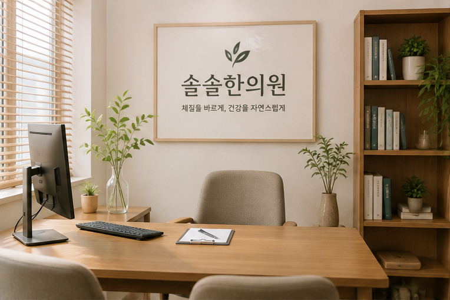
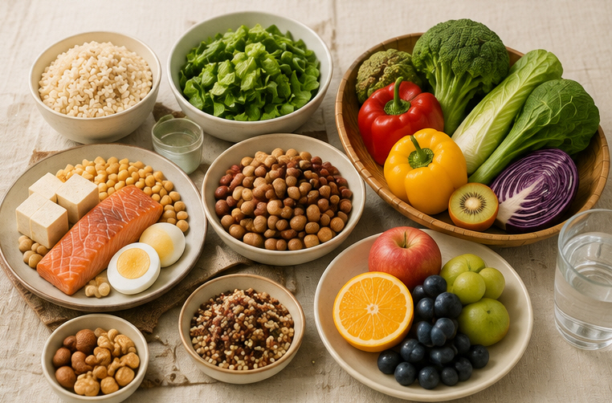

“저는 무슨
체질인가요?”
사상체질은 단순한 체형이나 몇 가지 질문만으로 결정하기보다 평소의 몸 상태와 증상의 경과를 함께 살펴보는 것이 중요합니다.

체질은 한 가지 특징만 보고 판단하지 않습니다
사상의학에서는 사람의 신체적·심리적 특성과 평소의 생리적인 특징, 질병이 나타나는 양상 등을 종합적으로 살펴 체질 가능성을 판단합니다.
진료 과정에서는 평소 소화 상태, 식욕, 수면, 땀과 열감, 대소변, 추위와 더위에 대한 반응 등을 함께 확인할 수 있습니다.
필요한 경우 체질에 따른 한약 처방을 고려하고, 복용 후 나타나는 변화와 경과도 체질 판단에 참고할 수 있습니다.
체형이나 인상 역시 참고할 수 있는 요소이지만, 그것만으로 체질을 단정하기보다는 여러 특징과 증상, 경과를 함께 살펴보는 것이 좋습니다.
태음인·소양인·소음인, 무엇이 다를까요?
아래 설명은 일반적인 사상의학적 특징을 쉽게 이해하기 위한 참고 내용입니다.
태음인
식욕, 체격, 땀의 양상 등 여러 특성을 함께 살펴봅니다. 땀이 많다는 이유 하나만으로 태음인이라고 판단하지 않습니다.
소양인
열감이나 더위에 대한 반응이 두드러지는 경우가 있을 수 있지만, 열이 많다는 특징 하나만으로 소양인이라고 판단하지 않습니다.
소음인
소화 상태나 추위에 대한 반응 등이 체질을 살펴보는 데 참고가 될 수 있습니다. 다만 개인마다 나타나는 모습에는 차이가 있습니다.

체질에 맞는 음식만 먹어야 하나요?
그렇지는 않습니다. 체질별로 전통적으로 잘 맞는다고 설명되는 음식이 있지만, 다른 체질의 음식을 먹었다고 해서 곧바로 건강에 문제가 생긴다는 의미는 아닙니다.
실제로는 평소 음식을 먹은 뒤 속이 편했는지, 더부룩함이나 설사, 속쓰림 등 불편이 반복되지는 않았는지를 함께 살펴보는 것이 더 실용적일 수 있습니다.
기존 질환이나 알레르기가 있다면 체질 음식보다 해당 질환에 맞는 의학적 식사 관리가 우선될 수 있습니다.
체질별 음식 참고표
필요하신 분만 펼쳐서 확인하실 수 있습니다.
체질별 음식 참고표 보기
| 분류 | 태양인 | 소양인 | 태음인 | 소음인 |
|---|---|---|---|---|
| 곡류·전분류 | 메밀 등 | 보리, 팥, 녹두 등 | 현미, 율무, 고구마, 옥수수, 밤 등 | 쌀, 찹쌀, 감자, 누룽지 등 |
| 어육류 | 굴, 새우, 오징어, 홍합, 게 등 | 돼지고기, 오리고기, 흰살생선, 굴, 새우 등 | 소고기, 생선류, 연어, 고등어 등 | 닭고기, 명태, 조기, 멸치, 장어 등 |
| 채소류 | 상추, 샐러리 등 | 오이, 가지, 배추, 숙주나물 등 | 무, 호박, 콩나물, 버섯, 도라지, 연근 등 | 깻잎, 부추, 시금치, 양배추, 양파, 마늘 등 |
| 과일류 | 포도, 다래, 감, 키위 등 | 딸기, 수박, 참외, 멜론 등 | 배, 매실, 살구, 자두 등 | 사과, 귤, 복숭아, 대추 등 |
열이 많고 땀이 많으면 어떤 체질일까요?
“더위를 많이 타니까 소양인인가요?” “땀이 많으니 태음인인가요?” 라는 질문을 자주 듣습니다.
하지만 열감이나 땀의 양만으로 사상체질을 결정하기는 어렵습니다.
같은 체질에서도 건강 상태와 계절, 현재 나타나는 병증에 따라 평소와 다른 열감이나 땀의 변화가 나타날 수 있습니다.
체질한약은 현재의 증상도 함께 살펴 처방합니다
같은 체질이라고 하더라도 모든 사람에게 항상 같은 처방을 사용하는 것은 아닙니다.
현재의 증상과 건강 상태, 소화·수면·식욕·땀과 대소변 등의 양상을 함께 확인한 뒤 한약 처방을 상담합니다.
처방 후 나타나는 변화와 경과도 다음 진료와 체질 판단에 참고할 수 있습니다.
체질에 대해 자주 묻는 질문
제 사상체질은 어떻게 알 수 있나요?
신체적인 특징뿐 아니라 평소 소화, 식욕, 수면, 땀과 열감, 대소변의 양상, 증상이 나타나는 경향 등을 종합적으로 살펴봅니다. 필요한 경우 한약 처방 후 나타나는 변화도 판단에 참고할 수 있습니다.
체질은 설문검사만 하면 바로 알 수 있나요?
설문은 참고자료가 될 수 있지만 그 결과 하나만으로 체질을 단정하기보다는 진료를 통해 여러 특징을 함께 살펴보는 것이 좋습니다.
열이 많으면 무조건 소양인인가요?
아닙니다. 소양인에서 열감이 두드러지는 경우가 있을 수 있지만 다른 체질에서도 현재 건강 상태에 따라 열감이나 더위가 심하게 느껴질 수 있습니다.
땀이 많으면 태음인인가요?
땀의 양상은 체질을 살펴보는 요소 중 하나이지만, 땀이 많다는 이유만으로 태음인이라고 판단하지 않습니다. 계절과 건강 상태, 다른 증상을 함께 살펴야 합니다.
체질에 맞는 음식만 먹어야 하나요?
그렇지 않습니다. 체질별 음식은 참고자료로 활용할 수 있으며 다른 체질에 해당하는 음식을 먹으면 안 된다는 의미는 아닙니다. 평소 자신이 먹었을 때 편한 음식과 반복해서 불편을 유발하는 음식을 살펴보는 것도 중요합니다.
다른 체질의 음식을 먹으면 몸에 해로운가요?
일반적으로 그렇게 단순하게 볼 필요는 없습니다. 과도한 음식 제한보다는 균형 잡힌 식사와 자신의 소화 상태를 함께 고려하는 것이 중요합니다.
소음인은 찬 음식을 먹으면 안 되나요?
사상의학에서는 소음인의 소화 상태와 찬 음식에 대한 반응을 중요하게 살펴보기도 합니다. 하지만 개인차가 있으므로 특정 음식을 무조건 금지하기보다 실제로 먹었을 때의 반응을 살펴보는 것이 좋습니다.
체질을 알면 어떤 점이 도움이 되나요?
체질은 현재의 건강 상태와 생활습관을 한의학적인 관점에서 이해하는 참고틀로 활용할 수 있습니다. 한약 처방이나 생활관리 상담에서도 체질적인 특징을 함께 고려할 수 있습니다.
체질한약은 모두 같은 처방을 쓰나요?
아닙니다. 같은 체질이라고 하더라도 현재의 증상과 상태가 다를 수 있기 때문에 진료 내용을 바탕으로 처방을 결정합니다.